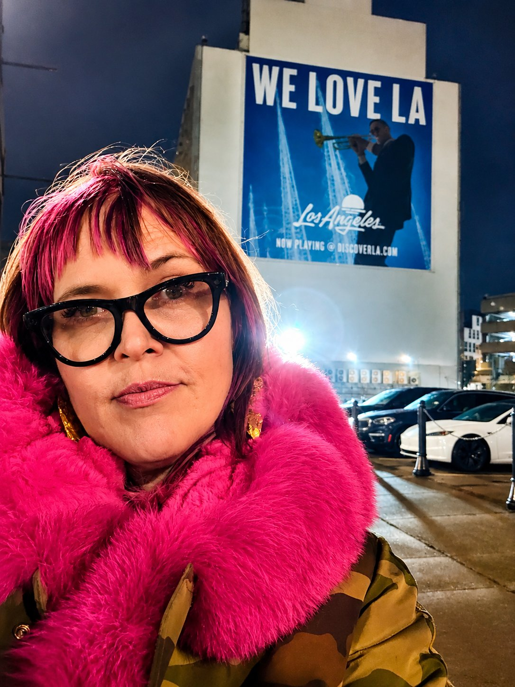
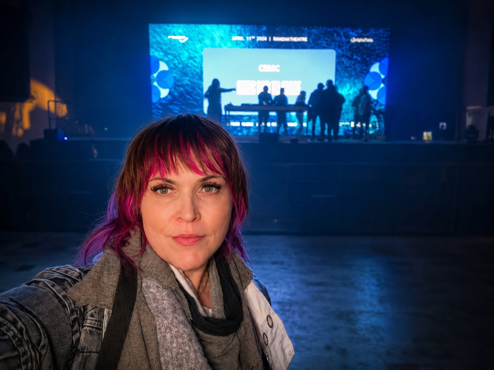

Identity
Clear positioning, narrative, and cohesive brand systems.
For more than twenty-five years, I’ve helped teams turn emerging ideas into products people could understand, trust, and adopt.
Today, I’m applying that same work to something much closer to home.
Electronic artists.

The Throughline
My career has always lived where technology, creativity, and uncertainty meet.
From interactive entertainment and virtual reality to enterprise software and software-defined vehicles, I’ve helped organizations including Ford Motor Company, Disney, Google, Microsoft, Jaunt, WEVR, and Publicis Groupe bring new ideas into the world before established playbooks existed.
Across every industry, the challenge was the same.
The best products aren’t simply built.
They’re positioned clearly, tested continuously, improved iteratively, and designed around the people they’re meant to serve.
Why Artists?
Because I don’t believe those principles belong only to software.
Detroit gave the world one of the most influential musical movements in history, yet many of today’s electronic artists are still expected to build careers without the strategic support available in nearly every other industry.
That’s where Sentient begins.
Why Detroit?
Through experimentation. Through collaboration. Through resilience.
The city’s greatest artists didn’t wait for permission. They built communities, created their own infrastructure, and continuously refined their craft.
Build. Learn. Improve. Repeat.
Those aren’t corporate ideas. They’re Detroit ideas.

What I Do
Together, we build the systems that support a sustainable creative career.
Clear positioning, narrative, and cohesive brand systems.
Professional websites, Electronic Press Kits, and booking-ready assets.
Community growth, partnerships, and meaningful fan engagement.
Revenue diversification, licensing, opportunity evaluation, and long-term business strategy.
Release planning, roadmaps, and sustainable systems for continuous growth.
The goal isn’t to manufacture artists.
It’s to help you build a career that can travel, adapt, and endure.
My Philosophy
Don’t amplify confusion.
Every release teaches you something.
Sustainable careers outperform viral moments.
Great work is rarely created alone.
The mission is bigger than the individual.
Success creates opportunities for the artists who come next.
Why Sentient?
My career has taken me through emerging technology, entertainment, software, and innovation.
Understand people. Create clarity. Prototype quickly. Learn honestly. Improve continuously.
Today, I’m bringing those same methods to the artists shaping the future of electronic music.
Because Detroit doesn’t need more talent. It needs more artists with the tools to build careers as enduring as the music itself.

Let’s Build Something That Lasts
Whether you’re preparing your first release or rethinking an established career, the goal is the same.
Create work people understand. Build systems that support it. Give your music the foundation it deserves.
Let’s Build Something That Lasts hello@sentientproductions.comSelected experience
A career spent helping organizations translate emerging technology into experiences people could understand, trust, and adopt. Those lessons now shape how I help artists build sustainable careers.
Organizations where I helped build emerging products, experiences, and technologies across entertainment, immersive media, enterprise software, and mobility.


The work that shaped how I think about products, people, and the adoption of new ideas.
Interactive Entertainment


Immersive Media


Streaming Platforms